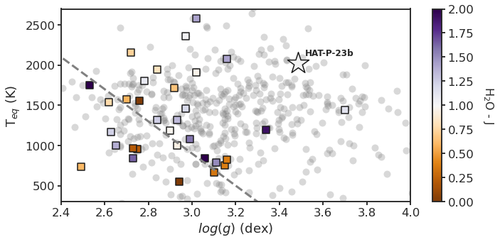

10. Cloudy vs. clear prediction¶
10.1. Setup¶
%load_ext nb_black
%load_ext autoreload
%autoreload 2
import glob as glob
import matplotlib as mpl
import matplotlib.patheffects as PathEffects
import matplotlib.pyplot as plt
import matplotlib.transforms as transforms
import numpy as np
import pandas as pd
import seaborn as sns
import corner
import json
import pathlib
import pickle
import utils
import warnings
from astropy import constants as const
from astropy import units as uni
from astropy.io import ascii, fits
from astropy.time import Time
from mpl_toolkits.axes_grid1 import ImageGrid
# Default figure dimensions
FIG_WIDE = (11, 5)
FIG_LARGE = (8, 11)
# Figure style
sns.set(style="ticks", palette="colorblind", color_codes=True, context="talk")
params = utils.plot_params()
plt.rcParams.update(params)
10.2. Dowload data¶
Unzip this into a folder named data in the same level as this notebook
10.3. Plot¶
df_wakeford = pd.read_table(
"data/cloudy_vs_clear/H2O_J_data.txt", header=1, sep="\s+", index_col="Name"
)
display(df_wakeford.head())
df_wakeford.dtypes
| T | logg | H2O-J | H2O-J_unc | |
|---|---|---|---|---|
| Name | ||||
| GJ436 | 669.0 | 3.10 | 0.339500 | 0.266522 |
| GJ1214 | 547.0 | 2.94 | 0.003296 | 0.056763 |
| HAT-P-01 | 1322.0 | 2.93 | 1.337013 | 0.679367 |
| HAT-P-11 | 838.0 | 3.06 | 2.499212 | 0.504664 |
| HAT-P-12 | 955.0 | 2.75 | 0.217148 | 0.650651 |
T float64
logg float64
H2O-J float64
H2O-J_unc float64
dtype: object
df_southworth = pd.read_table(
"https://www.astro.keele.ac.uk/jkt/tepcat/allplanets-csv.csv",
sep=r"\s*,\s*",
engine="python",
index_col="System",
)
display(df_southworth.head())
df_southworth.dtypes
| Teff | err | err.1 | [Fe/H] | erru | errd | M_A | errup | errdn | R_A | ... | errup.8 | errdn.6 | rho_b | errup.9 | errdn.7 | Teq | err.2 | err.3 | Discovery_reference | Recent_reference | |
|---|---|---|---|---|---|---|---|---|---|---|---|---|---|---|---|---|---|---|---|---|---|
| System | |||||||||||||||||||||
| 55_Cnc_e | 5172 | 18 | 18 | 0.35 | 0.10 | 0.10 | 0.873 | 0.051 | 0.035 | 0.954 | ... | 2.10 | 1.9 | 4.710 | 0.560 | 0.530 | 2349.0 | 188.0 | 193.0 | 2011ApJ...737L..18W | arXiv:1908.06299 |
| pi_Men | 5998 | 62 | 62 | 0.09 | 0.04 | 0.04 | 1.070 | 0.040 | 0.040 | 1.170 | ... | 1.90 | 9.5 | 2.100 | 0.400 | 0.400 | 1170.0 | 2.8 | 4.3 | arXiv:1809.05967 | arXiv:2007.06410 |
| AD_3116 | 3184 | 29 | 29 | 0.14 | 0.10 | 0.10 | 0.276 | 0.020 | 0.020 | 0.290 | ... | -1.00 | -1 | -1.000 | -1.000 | -1.000 | 1669.0 | 244.0 | 258.0 | 2017ApJ...849...11G | 2017ApJ...849...11G |
| AU_Mic | 3700 | 100 | 100 | -1.00 | -1.00 | -1.00 | 0.500 | 0.030 | 0.030 | 0.750 | ... | -1.00 | -1 | -1.000 | -1.000 | -1.000 | -1.0 | -1.0 | -1.0 | arXiv:2006.13248 | arXiv:2011.13357 |
| CoRoT-01 | 5950 | 150 | 150 | -0.30 | 0.25 | 0.25 | 0.950 | 0.110 | 0.110 | 1.131 | ... | 0.69 | 0.69 | 0.259 | 0.021 | 0.021 | 1915.0 | 49.0 | 49.0 | 2008A+A...482L..17B | 2011MNRAS.417.2166S |
5 rows × 42 columns
Teff int64
err int64
err.1 int64
[Fe/H] float64
erru float64
errd float64
M_A float64
errup float64
errdn float64
R_A float64
errup.1 float64
errdn.1 float64
loggA float64
errup.2 float64
errdn.2 float64
rho_A float64
errup.3 float64
errdn.3 float64
Period float64
e float64
errup.4 float64
errdown float64
a(AU) float64
errup.5 float64
errdown.1 float64
M_b float64
errup.6 float64
errdn.4 float64
R_b float64
errup.7 float64
errdn.5 float64
g_b float64
errup.8 float64
errdn.6 object
rho_b float64
errup.9 float64
errdn.7 float64
Teq float64
err.2 float64
err.3 float64
Discovery_reference object
Recent_reference object
dtype: object
It seems that something went wrong with the conversion of the errdn.6 column (it should be a float since it corresponds to the lower bound on the uncertainty of g_b), so let’s take a look at what happened:
problem_col = "errdn.6"
# Collect the name (indexed by System name) of each row that fails the conversion check
problem_rows = []
for i, s in df_southworth.iterrows():
try:
float(s[problem_col])
except ValueError:
print(f"Could not convert {s[problem_col]} to float at ({i}, {problem_col})")
problem_rows.append(i)
problem_rows
Could not convert 2..9 to float at (K2-060, errdn.6)
['K2-060']
It looks like some badly formatted data snuck in to the column for K2-060. It could be that the value should be 2.9 instead of 2..9, but since we already have so much other data, let’s just play it safe and drop this row:
df_southworth_cleaned = df_southworth.drop(problem_rows)
Now we can continue with the producing the final figure:
logg_wakeford, Teq_wakeford, H2O_J = df_wakeford[["logg", "T", "H2O-J"]].T.values
g_pop, Teq_pop = df_southworth_cleaned[["g_b", "Teq"]].T.values.astype(float)
"""
Updated Stevenson+ 16 plot using the H2O-J measurements from
Wakeford+ 2019
"""
fig, ax = plt.subplots(figsize=FIG_WIDE)
# Plot catalog targets
g_pop_pos_idxs = g_pop > 0.0 # Avoid taking log of invalid nums
logg_southworth = np.log10(100 * g_pop[g_pop_pos_idxs]) # log10(SI -> CGS)
T_eq_southworth = Teq_pop[g_pop_pos_idxs]
ax.plot(
logg_southworth,
T_eq_southworth,
"o",
color="gray",
alpha=0.3,
zorder=-10,
ms=10,
mew=0,
)
# Plot H2O-J information
points = ax.scatter(
logg_wakeford,
Teq_wakeford,
c=H2O_J,
marker="s",
s=100,
edgecolor="k",
cmap="PuOr",
vmin=0,
vmax=2,
)
cbar = plt.colorbar(points)
cbar.set_label("H$_{2}$O - J", fontsize=16, labelpad=30, rotation=270)
# Plot HAT-P-23b for context
targ_coords = (3.485, 2027)
ax.scatter(
*targ_coords,
c="#F3F3F3",
marker="*",
s=1000,
edgecolor="k",
cmap="PuOr",
vmin=0,
vmax=2,
)
ax.annotate(
"HAT-P-23b",
xy=targ_coords,
xytext=(10, 10),
textcoords="offset points",
# ha = "left",
fontsize=12,
weight="bold",
)
# Plot divide
m = (300 - 2100) / (3.3 - 2.4)
loggs = np.linspace(*ax.get_xlim(), 100)
Teqs = m * (loggs - 2.4) + 2100
ax.plot(loggs, Teqs, ls="dashed", lw=3, color="grey")
# Save fig
ax.set_xlim(2.4, 4.0)
ax.set_ylim(300, 2_700)
ax.set_xlabel("$log(g)$ (dex)")
ax.set_ylabel("T$_{eq}$ (K)")
utils.savefig("../paper/figures/cloudy_vs_clear/cloudy_vs_clear.pdf")
